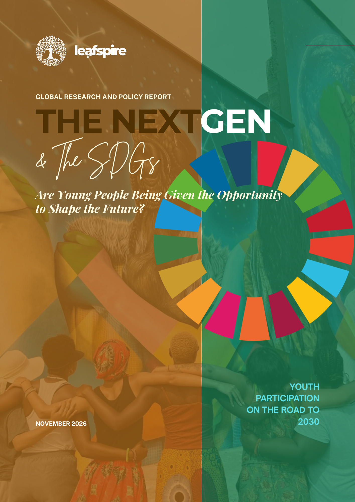
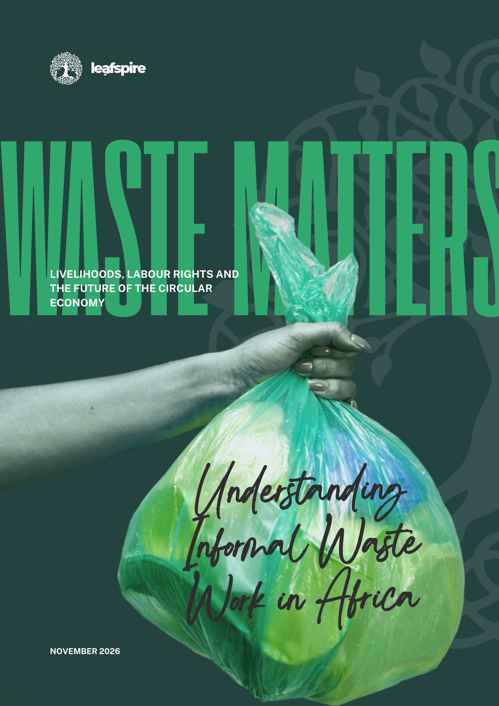
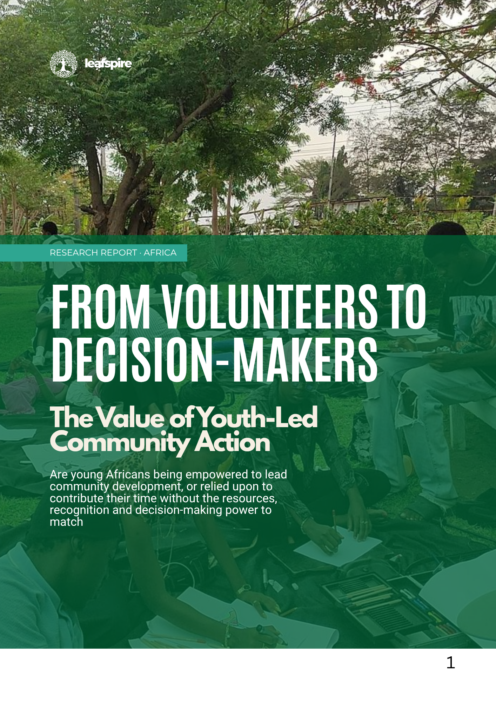

Reports
-

THE NEXTGEN & THE SDGs
Examines youth participation in sustainable development, looking at representation, leadership and whether young people have meaningful influence over the decisions shaping development priorities.
Read Full Report -

WASTE MATTERS
Explores informal waste work in Africa, including the livelihoods, labour rights and working conditions of waste workers and their place in the transition towards a more inclusive circular economy.
Read Full Report -

FROM VOLUNTEERS TO DECISION-MAKERS
Looks at the value of youth-led community action and the challenges young people face in accessing resources, recognition, institutional support and opportunities to influence decisions.
Read Full Report -
LEARNING BUT NOT PROGRESSING
Examines the gap between school access and actual learning outcomes in Africa, with attention to foundational learning, teaching conditions and the challenges affecting education quality.
Read Full Report